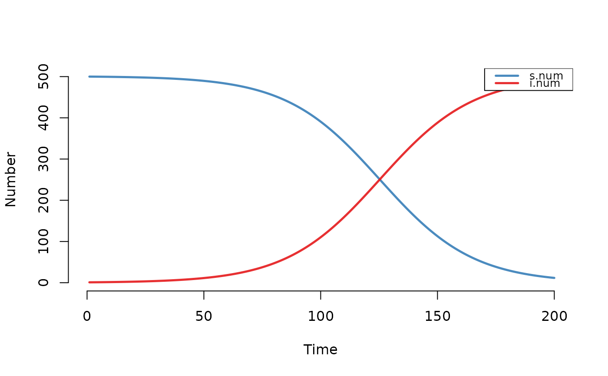
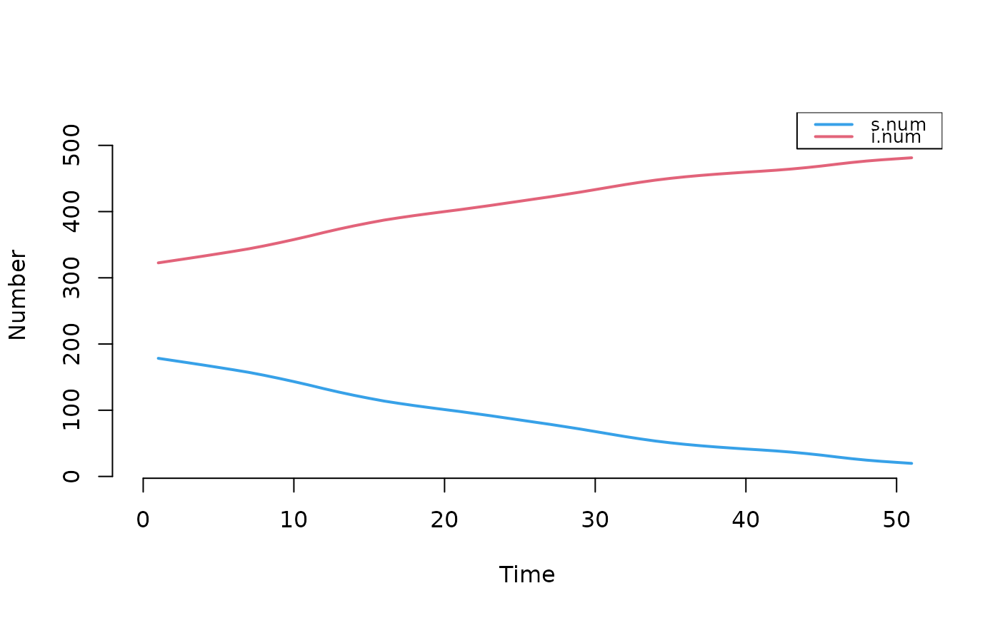

Left-truncates simulation epidemiological summary statistics and network statistics at a specified time step.
Details
This function would be used when running a follow-up simulation from time
steps b to c after a burn-in period from time a to
b, where the final time window of interest for data analysis is
b to c only.
Examples
param <- param.icm(inf.prob = 0.2, act.rate = 0.25)
init <- init.icm(s.num = 500, i.num = 1)
control <- control.icm(type = "SI", nsteps = 200, nsims = 1)
mod1 <- icm(param, init, control)
df <- as.data.frame(mod1)
print(df)
#> sim time s.num i.num num si.flow
#> 1 1 1 500 1 501 0
#> 2 1 2 500 1 501 0
#> 3 1 3 500 1 501 0
#> 4 1 4 500 1 501 0
#> 5 1 5 500 1 501 0
#> 6 1 6 500 1 501 0
#> 7 1 7 500 1 501 0
#> 8 1 8 500 1 501 0
#> 9 1 9 500 1 501 0
#> 10 1 10 500 1 501 0
#> 11 1 11 500 1 501 0
#> 12 1 12 499 2 501 1
#> 13 1 13 499 2 501 0
#> 14 1 14 499 2 501 0
#> 15 1 15 497 4 501 2
#> 16 1 16 496 5 501 1
#> 17 1 17 496 5 501 0
#> 18 1 18 495 6 501 1
#> 19 1 19 494 7 501 1
#> 20 1 20 494 7 501 0
#> 21 1 21 494 7 501 0
#> 22 1 22 494 7 501 0
#> 23 1 23 494 7 501 0
#> 24 1 24 494 7 501 0
#> 25 1 25 494 7 501 0
#> 26 1 26 494 7 501 0
#> 27 1 27 492 9 501 2
#> 28 1 28 492 9 501 0
#> 29 1 29 491 10 501 1
#> 30 1 30 491 10 501 0
#> 31 1 31 491 10 501 0
#> 32 1 32 491 10 501 0
#> 33 1 33 491 10 501 0
#> 34 1 34 490 11 501 1
#> 35 1 35 490 11 501 0
#> 36 1 36 490 11 501 0
#> 37 1 37 490 11 501 0
#> 38 1 38 490 11 501 0
#> 39 1 39 489 12 501 1
#> 40 1 40 489 12 501 0
#> 41 1 41 488 13 501 1
#> 42 1 42 488 13 501 0
#> 43 1 43 486 15 501 2
#> 44 1 44 486 15 501 0
#> 45 1 45 486 15 501 0
#> 46 1 46 485 16 501 1
#> 47 1 47 483 18 501 2
#> 48 1 48 483 18 501 0
#> 49 1 49 481 20 501 2
#> 50 1 50 480 21 501 1
#> 51 1 51 478 23 501 2
#> 52 1 52 477 24 501 1
#> 53 1 53 474 27 501 3
#> 54 1 54 473 28 501 1
#> 55 1 55 471 30 501 2
#> 56 1 56 469 32 501 2
#> 57 1 57 468 33 501 1
#> 58 1 58 467 34 501 1
#> 59 1 59 466 35 501 1
#> 60 1 60 465 36 501 1
#> 61 1 61 463 38 501 2
#> 62 1 62 462 39 501 1
#> 63 1 63 459 42 501 3
#> 64 1 64 459 42 501 0
#> 65 1 65 457 44 501 2
#> 66 1 66 451 50 501 6
#> 67 1 67 448 53 501 3
#> 68 1 68 446 55 501 2
#> 69 1 69 440 61 501 6
#> 70 1 70 437 64 501 3
#> 71 1 71 434 67 501 3
#> 72 1 72 432 69 501 2
#> 73 1 73 432 69 501 0
#> 74 1 74 428 73 501 4
#> 75 1 75 427 74 501 1
#> 76 1 76 424 77 501 3
#> 77 1 77 421 80 501 3
#> 78 1 78 416 85 501 5
#> 79 1 79 412 89 501 4
#> 80 1 80 406 95 501 6
#> 81 1 81 399 102 501 7
#> 82 1 82 396 105 501 3
#> 83 1 83 393 108 501 3
#> 84 1 84 386 115 501 7
#> 85 1 85 383 118 501 3
#> 86 1 86 374 127 501 9
#> 87 1 87 372 129 501 2
#> 88 1 88 369 132 501 3
#> 89 1 89 364 137 501 5
#> 90 1 90 355 146 501 9
#> 91 1 91 352 149 501 3
#> 92 1 92 347 154 501 5
#> 93 1 93 338 163 501 9
#> 94 1 94 327 174 501 11
#> 95 1 95 319 182 501 8
#> 96 1 96 314 187 501 5
#> 97 1 97 306 195 501 8
#> 98 1 98 301 200 501 5
#> 99 1 99 291 210 501 10
#> 100 1 100 285 216 501 6
#> 101 1 101 281 220 501 4
#> 102 1 102 269 232 501 12
#> 103 1 103 266 235 501 3
#> 104 1 104 256 245 501 10
#> 105 1 105 251 250 501 5
#> 106 1 106 246 255 501 5
#> 107 1 107 240 261 501 6
#> 108 1 108 235 266 501 5
#> 109 1 109 228 273 501 7
#> 110 1 110 218 283 501 10
#> 111 1 111 214 287 501 4
#> 112 1 112 206 295 501 8
#> 113 1 113 200 301 501 6
#> 114 1 114 198 303 501 2
#> 115 1 115 195 306 501 3
#> 116 1 116 187 314 501 8
#> 117 1 117 180 321 501 7
#> 118 1 118 177 324 501 3
#> 119 1 119 169 332 501 8
#> 120 1 120 165 336 501 4
#> 121 1 121 159 342 501 6
#> 122 1 122 157 344 501 2
#> 123 1 123 152 349 501 5
#> 124 1 124 145 356 501 7
#> 125 1 125 136 365 501 9
#> 126 1 126 133 368 501 3
#> 127 1 127 128 373 501 5
#> 128 1 128 126 375 501 2
#> 129 1 129 121 380 501 5
#> 130 1 130 116 385 501 5
#> 131 1 131 115 386 501 1
#> 132 1 132 108 393 501 7
#> 133 1 133 103 398 501 5
#> 134 1 134 99 402 501 4
#> 135 1 135 97 404 501 2
#> 136 1 136 96 405 501 1
#> 137 1 137 94 407 501 2
#> 138 1 138 92 409 501 2
#> 139 1 139 90 411 501 2
#> 140 1 140 84 417 501 6
#> 141 1 141 80 421 501 4
#> 142 1 142 77 424 501 3
#> 143 1 143 75 426 501 2
#> 144 1 144 70 431 501 5
#> 145 1 145 66 435 501 4
#> 146 1 146 61 440 501 5
#> 147 1 147 57 444 501 4
#> 148 1 148 57 444 501 0
#> 149 1 149 52 449 501 5
#> 150 1 150 49 452 501 3
#> 151 1 151 48 453 501 1
#> 152 1 152 42 459 501 6
#> 153 1 153 41 460 501 1
#> 154 1 154 41 460 501 0
#> 155 1 155 41 460 501 0
#> 156 1 156 40 461 501 1
#> 157 1 157 39 462 501 1
#> 158 1 158 35 466 501 4
#> 159 1 159 32 469 501 3
#> 160 1 160 30 471 501 2
#> 161 1 161 27 474 501 3
#> 162 1 162 24 477 501 3
#> 163 1 163 24 477 501 0
#> 164 1 164 22 479 501 2
#> 165 1 165 22 479 501 0
#> 166 1 166 22 479 501 0
#> 167 1 167 22 479 501 0
#> 168 1 168 22 479 501 0
#> 169 1 169 22 479 501 0
#> 170 1 170 21 480 501 1
#> 171 1 171 19 482 501 2
#> 172 1 172 19 482 501 0
#> 173 1 173 18 483 501 1
#> 174 1 174 18 483 501 0
#> 175 1 175 17 484 501 1
#> 176 1 176 17 484 501 0
#> 177 1 177 14 487 501 3
#> 178 1 178 13 488 501 1
#> 179 1 179 13 488 501 0
#> 180 1 180 13 488 501 0
#> 181 1 181 13 488 501 0
#> 182 1 182 13 488 501 0
#> 183 1 183 13 488 501 0
#> 184 1 184 12 489 501 1
#> 185 1 185 12 489 501 0
#> 186 1 186 9 492 501 3
#> 187 1 187 9 492 501 0
#> 188 1 188 8 493 501 1
#> 189 1 189 7 494 501 1
#> 190 1 190 7 494 501 0
#> 191 1 191 6 495 501 1
#> 192 1 192 4 497 501 2
#> 193 1 193 4 497 501 0
#> 194 1 194 4 497 501 0
#> 195 1 195 4 497 501 0
#> 196 1 196 4 497 501 0
#> 197 1 197 4 497 501 0
#> 198 1 198 4 497 501 0
#> 199 1 199 4 497 501 0
#> 200 1 200 3 498 501 1
plot(mod1)

mod1$control$nsteps
#> [1] 200
mod2 <- truncate_sim(mod1, at = 150)
df2 <- as.data.frame(mod2)
print(df2)
#> sim time s.num i.num num si.flow
#> 1 1 1 49 452 501 3
#> 2 1 2 48 453 501 1
#> 3 1 3 42 459 501 6
#> 4 1 4 41 460 501 1
#> 5 1 5 41 460 501 0
#> 6 1 6 41 460 501 0
#> 7 1 7 40 461 501 1
#> 8 1 8 39 462 501 1
#> 9 1 9 35 466 501 4
#> 10 1 10 32 469 501 3
#> 11 1 11 30 471 501 2
#> 12 1 12 27 474 501 3
#> 13 1 13 24 477 501 3
#> 14 1 14 24 477 501 0
#> 15 1 15 22 479 501 2
#> 16 1 16 22 479 501 0
#> 17 1 17 22 479 501 0
#> 18 1 18 22 479 501 0
#> 19 1 19 22 479 501 0
#> 20 1 20 22 479 501 0
#> 21 1 21 21 480 501 1
#> 22 1 22 19 482 501 2
#> 23 1 23 19 482 501 0
#> 24 1 24 18 483 501 1
#> 25 1 25 18 483 501 0
#> 26 1 26 17 484 501 1
#> 27 1 27 17 484 501 0
#> 28 1 28 14 487 501 3
#> 29 1 29 13 488 501 1
#> 30 1 30 13 488 501 0
#> 31 1 31 13 488 501 0
#> 32 1 32 13 488 501 0
#> 33 1 33 13 488 501 0
#> 34 1 34 13 488 501 0
#> 35 1 35 12 489 501 1
#> 36 1 36 12 489 501 0
#> 37 1 37 9 492 501 3
#> 38 1 38 9 492 501 0
#> 39 1 39 8 493 501 1
#> 40 1 40 7 494 501 1
#> 41 1 41 7 494 501 0
#> 42 1 42 6 495 501 1
#> 43 1 43 4 497 501 2
#> 44 1 44 4 497 501 0
#> 45 1 45 4 497 501 0
#> 46 1 46 4 497 501 0
#> 47 1 47 4 497 501 0
#> 48 1 48 4 497 501 0
#> 49 1 49 4 497 501 0
#> 50 1 50 4 497 501 0
#> 51 1 51 3 498 501 1
plot(mod2)

mod2$control$nsteps
#> [1] 51